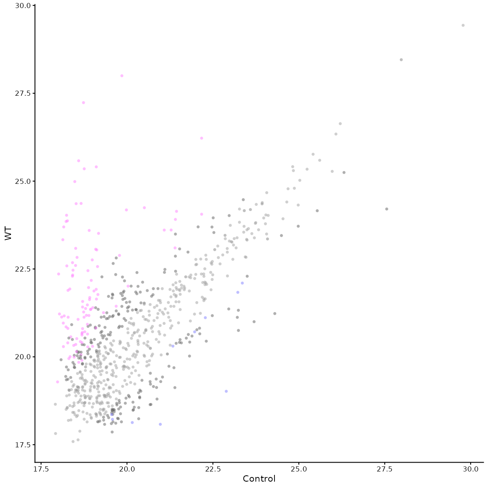
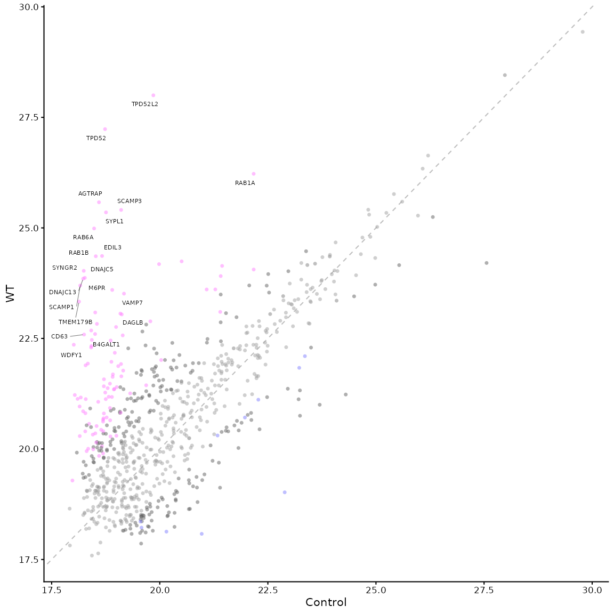
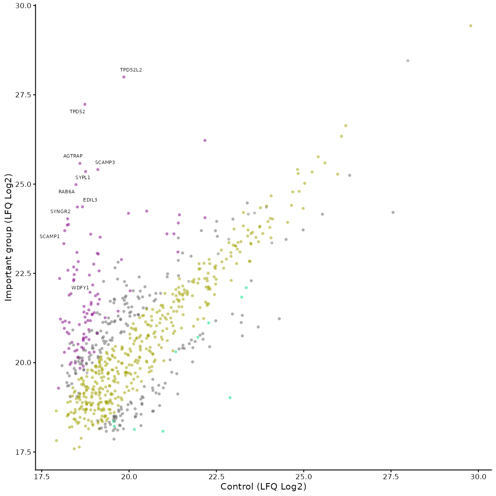
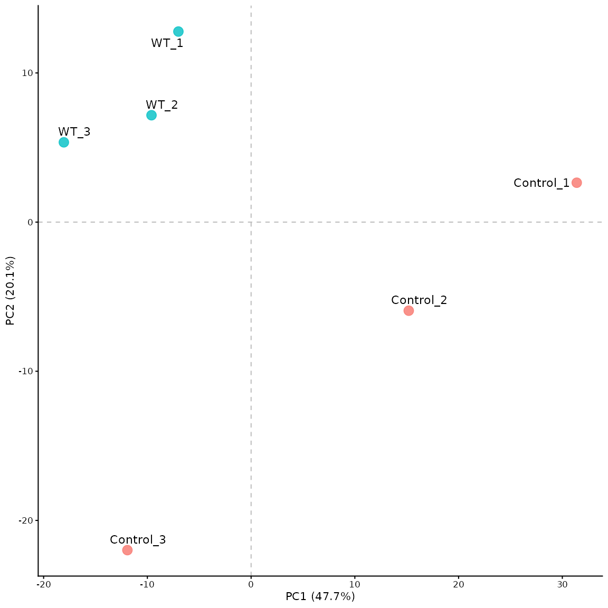

The main output is obviously, the volcano plot itself, which is
returned as a ggplot object from the
volcano_plot_maxquant() function. This can be customised
further using ggplot2 functions, but there are other outputs that can be
generated from the MaxQuant data.
Text output
To generate a text output of the enriched proteins, you can set the
text_output parameter to TRUE in the
volcano_plot_maxquant() function. This will generate a text
file containing the enriched proteins and their associated statistics.
The output is saved as a tab-separated text file in the
text_output_dir directory (default is “Output/Data/”).
It contains a ranked list of proteins where the ranking is calculated by the manhattan distance from the origin (0,0) in the volcano plot. This list can be useful for other applications or for generating a table for publication.
Alternative processing and statistical tests
Changing the processing of MaxQuant data
By default, process_maxquant() will analysis LFQ
intensity values. To use a different measurement, the meas
parameter can be set to one of the other measurements in the MaxQuant
output (e.g. “iBAQ”, “Intensity”, “MS/MS.counts”).
The baseval parameter can be set to a value other than 0
to use a different base value for log2 transformation. The
width and downshift parameters can be set to
different values to change the imputation of missing values. The
seed parameter can be set to a different value to change
the random seed used for imputation.
Statistical tests
The standard method for calculating p-values is via an unpaired two
sample t-test assuming equal variance. To change to paired t-test, you
can set the paired parameter to TRUE in the
process_maxquant() function, similarly the
var.equal parameter can be set to FALSE to use
Welch’s t-test instead of Student’s t-test. The default settings mirror
Perseus processing.
Other plots
Mean vs Mean plot
The function mean_plot_maxquant() can be used to
generate a mean vs mean plot of the two groups being compared. This is
useful for visualising the distribution of the data.
The plot is generated with similar parameters to the volcano plot. Some examples are shown below:
library(VolcanoPlotR)
# get the path to the proteinGroups.txt file included in the package
filepath <- system.file("extdata", "proteinGroups.txt", package = "VolcanoPlotR")
# get the filename from the path
filename <- basename(filepath)
# get the directory name
filedir <- dirname(filepath)
df <- load_maxquant(file = filename, datadir = filedir)
df <- process_maxquant(df, group1 = "WT", group2 = "Control")
#> Using specified groups: WT versus Control
# now we can generate the mean vs mean plot
mean_plot_maxquant(df)
# we can add a line to show the diagonal and start to label points
mean_plot_maxquant(df, xy_line = TRUE, label_points = "top_20")
# the parameters are the same as for the volcano plot, so we can change the colours and labels
mean_plot_maxquant(df, label_points = "5_10",
x_label = "Control (LFQ Log2)",
y_label = "Important group (LFQ Log2)",
vp_colours = c("0" = "#a0a000", "1" = "#808080",
"2" = "#606060", "3" = "#00dd80",
"4" = "#606060", "5" = "#800080"))
PCA plot
This can be generated using the pca_plot_maxquant()
function. The PCA plot shows a comparison between runs (experimental
repeats), rather than between proteins.
# now we can generate the mean vs mean plot
pca_plot_maxquant(df)